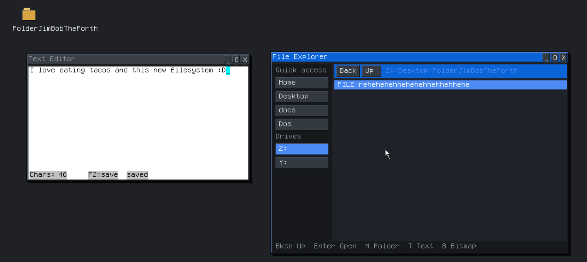

Documentation
GooberOS keeps your files on the system volume, Z:. The live ISO holds them in memory. An install writes them to a disk, and you choose FAT32 or GooberFS for that disk.

The picture is a GooberFS system volume. FolderJimBobTheForth sits on the desktop and under Z:/Desktop. The text editor saved a file in that folder. Y: is the other volume on the same disk, the FAT32 partition that holds the boot files.
Choose a volume
Boot the ISO and open the installer. Pick the disk, then the partition style, then the system volume.
- MBR (BIOS) for a legacy machine. GPT (UEFI) for a current PC. GPT is the default.
- FAT32 is the default system volume. Boot files and your files share one partition. The confirm page says
System: FAT32. - GooberFS keeps a 36 MiB FAT32 boot partition, because the boot loader reads FAT32, and puts Desktop, Apps, Dos, Config, and the rest of your files on the remaining space. The confirm page says
System: GooberFS. On the style page, F selects FAT32 and B selects GooberFS.
The disk needs room for that 36 MiB boot image. A GooberFS install also needs at least 8 MiB after it. A 2 GB disk is enough. Confirming the install erases the whole target disk. When it finishes, reboot from that disk.
After a GooberFS install, Disk Manager labels the first volume FAT32 and the second volume GooberFS. The partitioning line still says GUID Partition Table when you chose GPT. Z: is the system volume. The FAT32 boot partition shows up as another letter, such as Y:.
Pick FAT32 when you want one volume that other computers can read, or when you want the boot files and your files in the same place. Pick GooberFS when this disk is for GooberOS and you want case-sensitive names and a volume made for the system. The installer copies the same desktop, apps, and DOS programs onto either choice.
FAT32 and GooberFS
| FAT32 | GooberFS | |
|---|---|---|
| Where it lives | One partition for boot and files. | Your files are on GooberFS. A 36 MiB FAT32 partition stays for boot. |
| Who can read it | GooberOS, and the usual tools on Windows, Linux, and a USB stick. | GooberOS reads the file volume. Other systems read the FAT32 boot partition. |
| Names | Desktop and desktop are the same file. The desktop keeps 31 characters of a name. |
Names are case-sensitive and at most 31 characters. Notes and notes are two files. |
| A folder | The desktop lists 32 files and 16 folders at the root, and 24 files and 12 folders inside a folder. | The same listing counts, and the volume itself stores at most 113 names in one folder. |
| A file | Up to 4 GiB, minus one byte, which is the FAT32 size limit. | Up to 4 GiB, minus one byte. One save is stored as at most 32 stretches of disk. |
| The whole disk | FAT32 can hold a large tree. This desktop still stops at the listing counts above. | 128 slots on a small disk and 2,048 on a large one. Two are reserved, so the volume holds 126 to 2,046 files and folders. |
| What an install writes | The boot loader, kernel, Desktop, Apps, Dos, Config, home, tmp, lib, and usr. | The same tree. boot and EFI stay on the FAT32 partition. Everything else is copied to GooberFS. |
How GooberFS works
A GooberFS volume is a row of 4096-byte blocks. The first block is an anchor. It names the volume and records where free space begins. Disk Manager reads that block and labels the volume GooberFS.
Each file and each folder has one record in a table near the start of the volume. The record says whether it is a file or a folder, how big it is, and which blocks hold the bytes. A fresh install hands out those blocks from a cursor, so formatting does not walk every block on the disk. Deleting a file returns its blocks to a free list, and a later save can reuse them.
A folder is stored as a file whose bytes are fixed 36-byte records: a name of up to 31 characters, and the record it points to. A new volume starts with Desktop and Config. The installer then copies the userspace tree onto it. Saving a file replaces that file’s bytes. Tab completion in the shell matches the name in the case you typed, and a folder is completed with a trailing slash so the next Tab continues inside it.
There is no owner, permission, or recorded timestamp on a file. A crash while a save is being written can drop that save. The previous copy of the file stays. There is no repair command for space left behind by a crash.
What you can do
On the installed system, Z: is the volume you chose. File Explorer opens it from the drive list. N makes a folder, T makes a text file, Enter opens the selection, and Backspace goes up. Anything you put in Desktop shows on the desktop, which is the folder in the picture.
The text editor saves with F2. The status line in the picture reads F2=save saved after the note was written into FolderJimBobTheForth.
The shell uses the same folders. These commands work on FAT32 and on GooberFS:
ls
cd Desktop
mkdir FolderJimBobTheForth
new note.txt
write note.txt hello
read note.txt
rename note.txt done.txt
del done.txt
rmdir FolderJimBobTheForthrmdir removes an empty folder. Empty the folder first. run starts a .gob app from Apps. rundos starts a .COM or .EXE from Dos/Apps. A GooberC program can use goober.fs to read, write, and list the same paths. The language page for that is Files.
On GooberFS, type the capital letters the file was saved with. cd desktop does not open Desktop. On FAT32, those two names are the same file.
Limitations
These are the limits of the current desktop, on both filesystems where the list is shared, and on GooberFS where the volume adds its own.
| Limit | What it means |
|---|---|
| 31-character names | A name longer than 31 characters is refused on GooberFS. The same length is what the desktop keeps for a FAT32 name. / and \ cannot appear in a name. |
| 32 files and 16 folders at the root | File Explorer and the shell list that many entries in Z:/. The install already uses several of the folder slots for Desktop, Apps, Dos, Config, home, tmp, lib, and usr. |
| 24 files and 12 folders inside a folder | A folder below the root lists that many. Apps and Dos/Apps are sized to fit the programs the installer copies. |
| 113 names in one GooberFS folder | The volume stores at most one 4096-byte block of names per folder, which is 113 files and folders together. The desktop list stops at the smaller counts above. |
| 126 to 2,046 files and folders on GooberFS | The volume has 128 slots on a small disk and 2,048 on a large one. Two slots are reserved, so those disks hold 126 and 2,046 files and folders. |
| 4 GiB minus one byte | That is the largest single file on FAT32 and on GooberFS. |
| 32 stretches per GooberFS file | A file written in one piece uses one stretch and can fill the free space, up to the size limit. After many deletes and rewrites, a file can be split. The save fails if it would need a 33rd stretch. |
| Eight open files | GooberFS keeps eight files open at once. |
| Case-sensitive GooberFS names | Readme.txt and readme.txt are different files. Tab completion uses the case you type. |
Empty a folder before rmdir |
A folder that still contains a file or a folder stays where it is. |
| No owners, permissions, or timestamps | GooberFS does not record who wrote a file, who may read it, or when it was saved. The editor’s “saved” line is the editor, not a clock stored on the volume. |
| A crash can drop the newest save | The previous copy of the file remains. Free space left behind by a crash stays unused. There is no filesystem check to recover it. |
| Other computers read FAT32 | To move files to Windows or Linux, use a FAT32 system volume, or copy them onto the FAT32 boot partition. A GooberFS volume stays on GooberOS. |